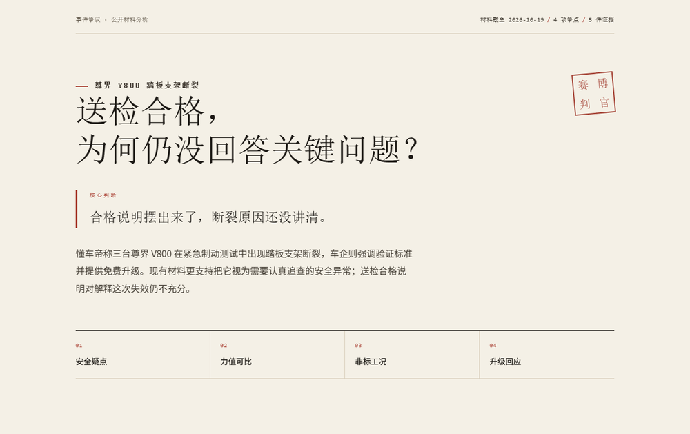
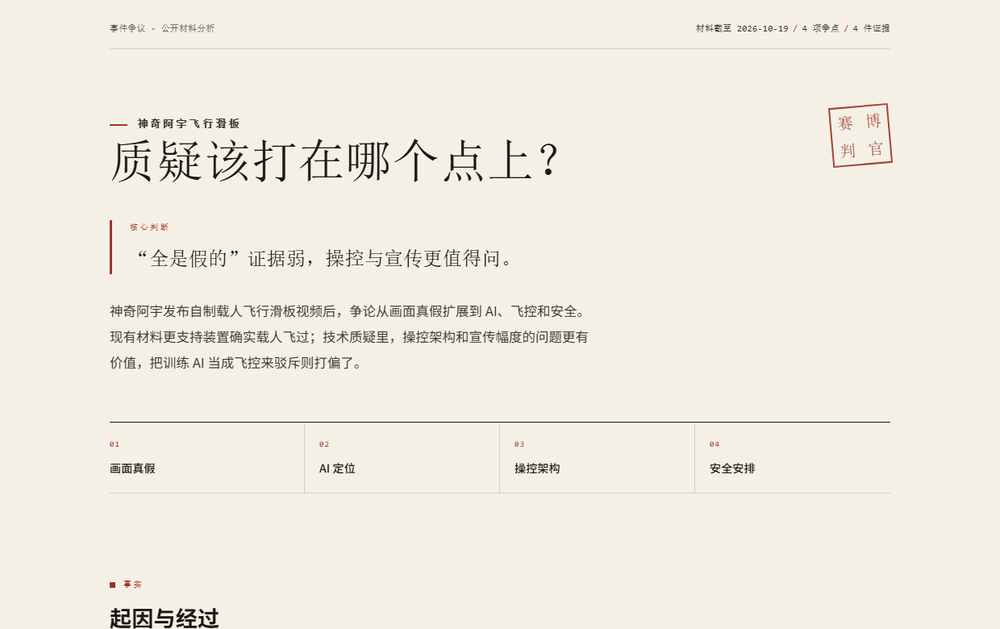
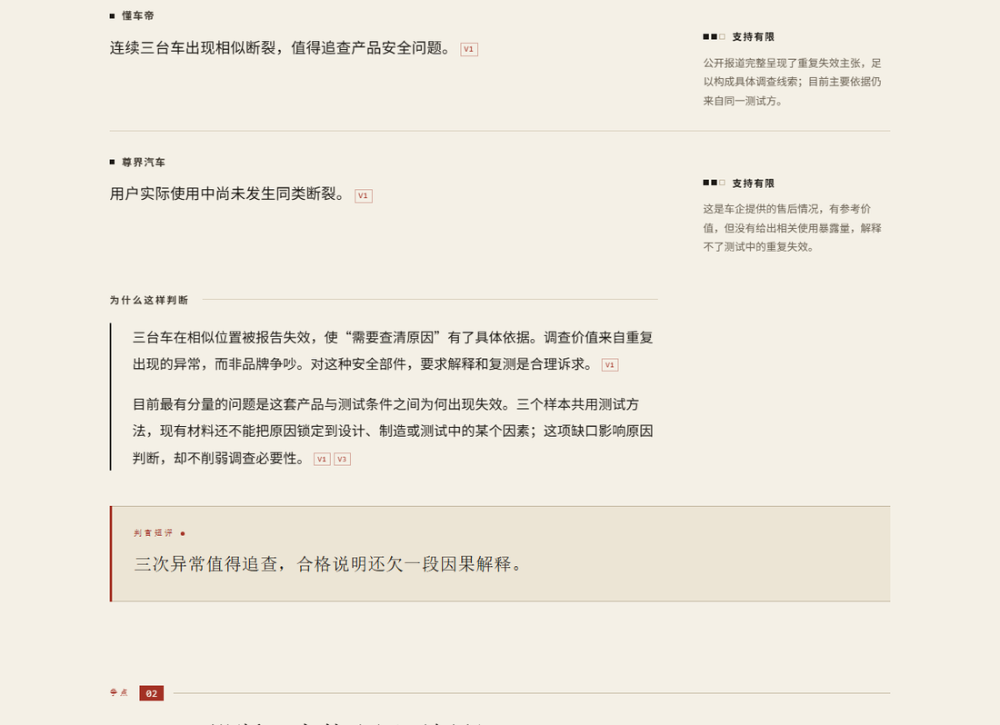
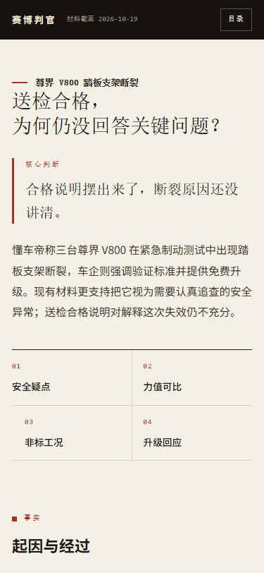
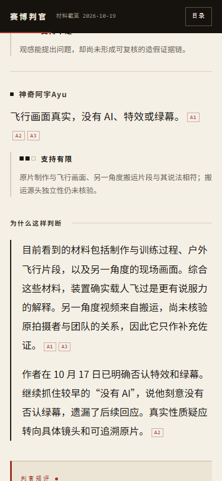
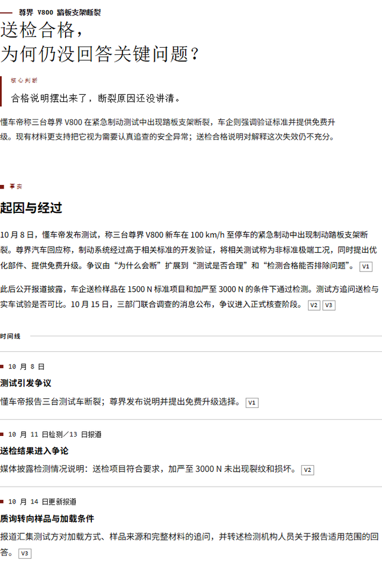

事件争议 · 产品安全
尊界 V800 踏板支架断裂
送检合格，为何仍没回答关键问题？
当前判断：安全质疑有实质依据。送检结果有价值，但还没有建立与实车断裂测试的可比性；升级值得肯定，回应还不完整。
4 项争点 · 5 件证据 · 材料截至 2026-10-19
打开完整报告 →大多数“分析”会长成三种样子：复述新闻、罗列双方、最后落在“仍需观察”。读者读完，还是不知道哪句话更站得住。这里的做法是把一场争议拆成可审理的争点，逐条评价具体主张，给出支持度与理由，最后落到一个明确的当前判断。
| 维度 | 常见做法 | 赛博判官 |
|---|---|---|
| 结论 | 各有各的道理，等待后续。 | 当前最佳解释，并写明什么材料会改变判断。 |
| 评价单位 | 整个事件，或整个人。 | 一句具体主张：谁说、说了什么、支持到哪一步。 |
| 支持度 | 语气、立场、看起来像。 | 六类语义标签，每一类都带理由，不折算成百分比。 |
| 出处 | 文末一堆链接。 | 每段可点回证据条目，再从条目回到对应争点。 |
| 可修正 | 不说明什么会推翻它。 | 指明决定性材料；新证据出现就改判。 |
流程写在技能入口里，报告结构由模板承载。换一个事件，换的是数据，不是版式。
确认对象、时间、触发材料与本次主问题。事件争议与公共议题走两条轻量分支；有实质歧义才作最小澄清。
记下谁说了什么、何时说的、读到的是正文还是元数据、缺口在哪里。不同转载不按独立证据累计。
每个争点四拍：问题、各方主张、证据与支持度、局部裁定。同一方可以在不同争点上得到不同评价。
哪些说法站得住、最佳解释是什么、哪几个问题真正未决。不用“各有道理”代替结论。
单文件 HTML：目录、页边批注、证据回链、判词卡、打印样式。双击可读，不请求任何外部资源。
支持度只评价某一句话，不评价人，也不折算成总分。六个标签对应六种形状，读者不必靠颜色分辨。
没有“87% 可信”，没有阵营血条，没有人物总分。一场争论也不一定只有两方：三种以上立场、同为一方却在不同争点上评价不同，都是正常结果。
都能直接点开，全文离线可读；手机与打印版式已经实测。

送检合格，为何仍没回答关键问题？
当前判断：安全质疑有实质依据。送检结果有价值，但还没有建立与实车断裂测试的可比性；升级值得肯定，回应还不完整。
4 项争点 · 5 件证据 · 材料截至 2026-10-19
打开完整报告 →
质疑该打在哪个点上？
当前判断：现有材料更支持真实载人飞行。“全是假的”证据弱；操控架构、AI 训练收益与户外风险控制更值得追问。
4 项争点 · 4 件证据 · 材料截至 2026-10-19
打开完整报告 →首屏先给判断，正文按争点跳读，证据从任何一句判断一步可达。默认展示背景与核心论证，方法说明放附录。

案由、追问、核心判断、截至日期。免责话不占第一屏，限定只跟着它影响的结论。
支持度与理由和主张同一行对齐；手机落到主张下方，带一条竖线，不丢层级。
正文的 V1 → 证据条目 → “被引用于 §争点 01”。从判断到出处，再回到读到的位置。
事件名、四项裁定、截至日期、证据编号。截图可分享，被裁掉的只有完整推理。



| 项目 | 实测 |
|---|---|
| 输出 | 单个 HTML，CSS 与脚本内联，双击可读 |
| 依赖 | 无框架、无外部请求；字体用系统栈 |
| 脚本关闭 | 正文、目录、证据锚点、折叠区全部可用 |
| 打印 | A4 单栏，折叠区展开；v800 为 9 页 |
| 对比度 | 15.39 : 1 · 10.82 : 1 · 5.35 : 1 · 6.11 : 1 |
| 版式 | 1920–320 十个宽度，0 横向溢出 |
| 引用 | 37 + 39 处，0 断链 |
| 复用 | 数据 JSON 驱动，一条命令重建 |
技能入口是 SKILL.md，写作与分支规范在 references/，渲染入口是 template/build.mjs。Node 18 以上，零第三方依赖。
把 skill 目录放到你的 Agent 技能路径，SKILL.md 是入口。
复制一个报告对象，替换标题、争点、主张与来源编号。
一条命令输出 HTML；校验会拦下不存在的来源编号、非法链接与空字段。
# 渲染全部报告 $ node template/build.mjs # 只做校验，不写文件 $ node template/build.mjs --check 校验通过：2 份报告，0 条提示。 # 只渲染一份 $ node template/build.mjs v800
构建时内联 CSS 与脚本；成品不请求字体、框架或数据。